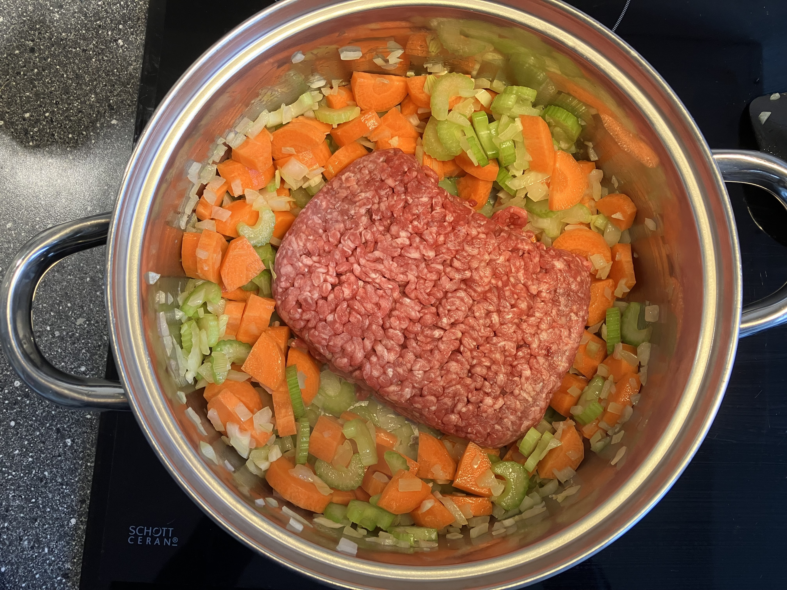
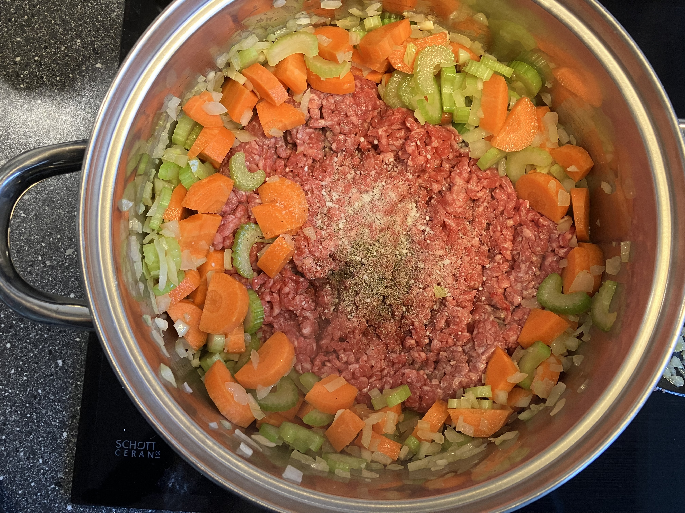
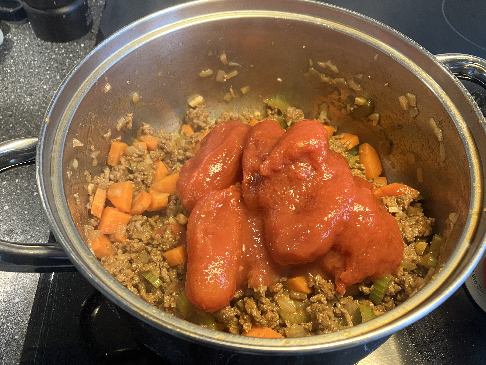
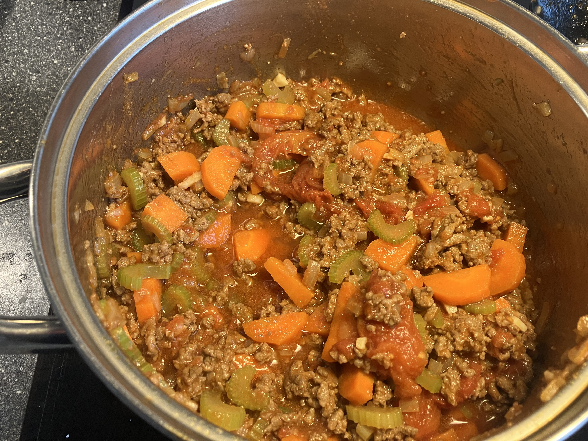
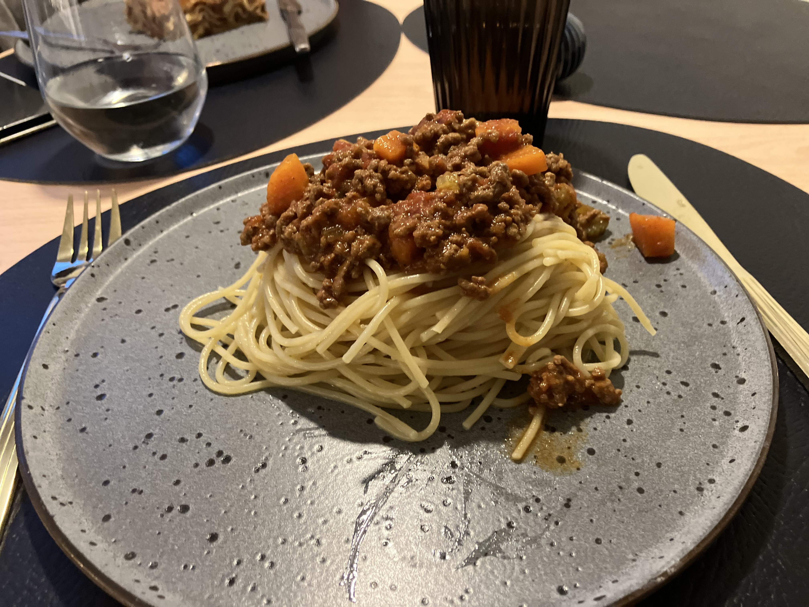

500 gram hakket oksekød
1 Løg
2 Fede hvidløg
2 Stænger bladselleri
2-3 Gulerødder
3 tsk. Tomatpuré
1 ds. Flåede tomater
Evt. balsamico/rødvin
Frisk basilikum / 2 tsk. tørrede
Salt & peber
120 g. Spaghetti pr. portion
Løg & hvidløg i små tern
Bladselleri og gulerødder i
mundrette stykker
Svits løg og hvidløg i
olivenolie til de er glasklare
(2-3 min.)
Tilsæt gulerødder og bladselleri,
og lad det stege af
(2-3 min.)
Brun det hakkede oksekød af
Tilsæt salt og peber
(evt. tørret basilikum)
Tilsæt tomatpuré og steg det
godt af.
Tilsæt evt. balsamico eller rødvin,
og lad det trække.
Tilsæt flåede tomater.
Lad det simre og rør rundt undervejs
Min. 30 min.
Meget gerne 4-6 timer
Kog spaghetti
Se evt. tips & tricks i bunden
af siden
Tilsæt evt. frisk basilikum et par
minutter før servering
Smag til med salt og peber
Server!
Jeg kan godt lide at starte med at finde alle råvarerne frem og klargøre dem.
Det gør det nemmere og mindre stressfuldt når man begynder at stege af
Balsamico/rødvin giver en fantastisk aromatisk smag til bolognesen. Hvis man alligevel regner med at åbne en flaske rødvin, kan jeg kun anbefale at koge 1 dl. med i bolognesen.
Bare husk at kog alkoholen ud af den.
Hvis ikke man lige har en flaske rødvin, kan man med fordel bruge balsamico, som kan give noget af den samme dybde.
Frisk basilikum kan virkelig være med til at løfte retten, idet den giver en kraftig frisk parfume, og en fantastisk smag. Det behøver ikke være dyrt at have frisk basilikum.
Den kan holde sig, og endda vokse, hen over alle de varme/lyse måneder hvis man behandler den rigtigt.
Er du interesseret i mere info om at holde frisk basilikum så læs denne artikel:
https://spisbedre.dk/artikler/sadan-holder-du-liv-i-din-basilikum
Spaghetti: Der findes mange måder at koge spaghetti på. Jeg koger mine i saltet vand i mellem 7-8 minutter. De må gerne have lidt bid i sig når man hælder vandet fra.
Jeg tilsætter først olivenolie når jeg har hældt vandet fra, så det kommer i kontakt med den færdigkogte spaghetti.